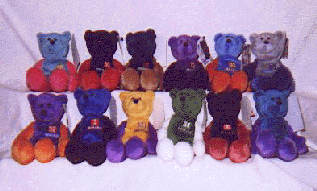

Patricia's Various Bear Stuff
To the NBA stuff
To the Mavs stuff


A few years ago, I started selling Limited Treasures NBA Pro Bears.
Unfortunately, Limited Treasures no longer makes the NBA bears any more.
I'm no longer actively selling the bears (ie, I got rid of all my costs
(merchant account, business web page)), but I still have a number bears
in stock. If you are interested in purchasing a bear or two or more,
send me an e-mail at
pbender@eskimo.com
with NBA Bears as the subject (or something similar so I'll know it is not
spam) and I'll make sure I still have the bear(s) you want in stock and
tell you where you need to send the Money Order (sorry, for ease for me,
I'm only accepting money orders). Sorry, US Mailing addresses only.
The bears are new and are an official NBA product. They sit about
5 inches tall and are a little under 9 inches from ear to toe. Sitting,
they are a little under 6 inches tail to toe and standing they are about
4 inches tail to belly. [They sit comfortably on their own, but need help
standing.]
The bears cost $10 each.
The shipping and handling fee is $5 for up to 10 bears.

Megan Coon loves her Shaq bear



- Bears I have available (I have 1 to 8 of each):
- Shareef Abdur-Rahim (Vancouver Grizzlies), aqua body with brown arms and legs
- Ray Allen (Milwaukee Bucks), purple body with green arms and legs
- Darrell Armstrong (Orlando Magic), blue body with grey arms and legs
- Elton Brand* (Chicago Bulls), red body with black arms and legs
- Vince Carter (Toronto Raptors), purple body with black arms and legs
- Baron Davis* (Charlotte Hornets), blue body with aqua arms and legs
- Tim Duncan (San Antonio Spurs), aqua body with pink arms and legs
- Patrick Ewing (New York Knicks), pale blue body with orange arms and legs
- Steve Francis (Houston Rockets), red body with blue arms and legs
- Tim Hardaway (Miami Heat), yellow body with blue arms and legs
- Allan Houston (New York Knicks), pale blue body with orange arms and legs
- Allen Iverson (Philadelphia 76ers), blue body with black arms and legs
- Antawn Jamison (Golden State Warriors), blue body with gold arms and legs
- Jason Kidd (Phoenix Suns), purple body with orange arms and legs
- Rashard Lewis (Seattle Sonics), red body with green arms and legs
- Stephon Marbury (New Jersey Nets), blue body with grey arms and legs
- Shawn Marion* (Phoenix Suns), purple body with orange arms and legs
- Karl Malone (Utah Jazz), blue body with purple arms and legs
- Antonio McDyess (Denver Nuggets), blue body with brown arms and legs
- Andre Miller* (Cleveland Cavaliers), blue body with black arms and legs
- Reggie Miller (Indiana Pacers), yellow body with blue arms and legs
- Alonzo Mourning (Miami Heat), yellow body with blue arms and legs
- Lamar Odom* (Los Angeles Clippers), blue body with red arms and legs
- Hakeem Olajuwon (Houston Rockets), red body with blue arms and legs
- Paul Pierce (Boston Celtics), green body with white arms and legs
- Gary Payton (Seattle Sonics), red body with green arms and legs
- David Robinson (San Antonio Spurs), aqua body with pink arms and legs
- Glenn Robinson (Milwaukee Bucks), purple body with green arms and legs
- Jalen Rose (Indiana Pacers), yellow body with blue arms and legs
- Jerry Stackhouse (Detroit Pistons), grey body with blue arms and legs
- John Stockton (Utah Jazz), blue body with purple arms and legs
- Wally Szcerbiak (Minnesota Timberwolves), grey body with blue arms and legs
- Jason Terry* (Atlanta Hawks), red body with black arms and legs
- Gary Trent (Dallas Mavericks), blue body with green arms and legs
- Chris Webber (Sacramento Kings), purple body with grey arms and legs
- Rasheed Wallace (Portland Trailblazers), black body with red arms and legs
- NFL Jerry Rice (San Francisco 49ers), red body with brown arms and legs
- * = Rookie bear, ROOKIE is on the outside of both legs
Patricia Bender
patricia@dfw.net
Not affiliated with or representing anyone besides myself